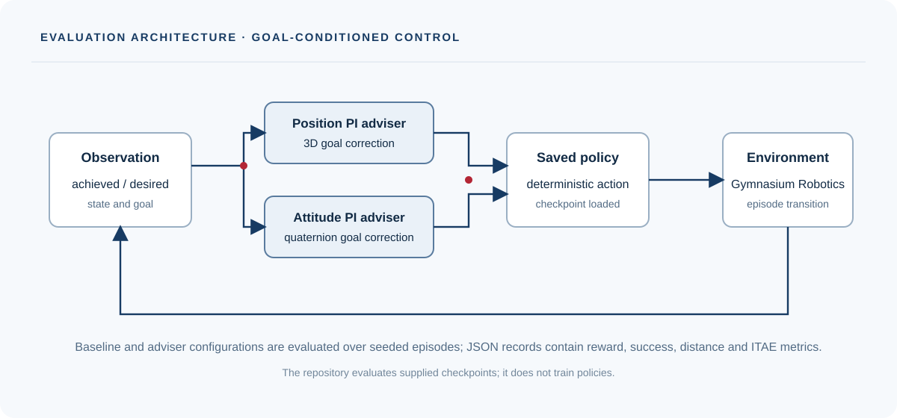

Position PI
Three-dimensional goal correction with proportional and integral error.
Evaluate saved goal-conditioned robotics policies with position and quaternion attitude advisers.

Three-dimensional goal correction with proportional and integral error.
Attitude correction from quaternion goal error in the saved-policy evaluation loop.
Compare baseline and Adviser settings across supported Gymnasium Robotics checkpoints.